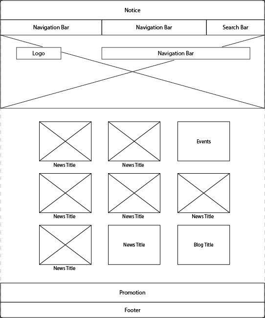
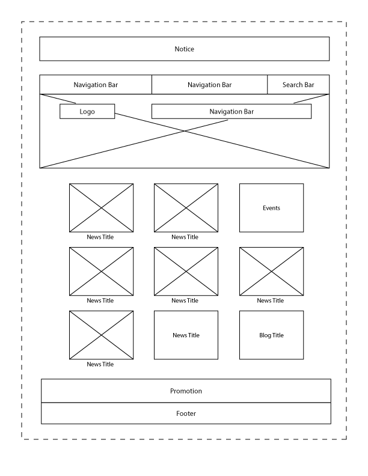

-
Using the favorite website you chose in homework 1, create a wireframe for one page of it using pen/paper, PowerPoint, or any your tool of choice. (use the 'img' tag!) Make sure to let us know what the name of your website is (Use the 'p' tag!)
Website: https://www.berkeley.edu/
 -
Try to improve the website you've chosen, and create a redesigned wireframe of one page for the same website using the principles of visual hierarchy that you learned from the article.
Website: https://www.berkeley.edu/

-
What is the goal of the website? Who is it intended for? How does the design accomplish this? Write 2-3 sentences answering these questions. (Use the 'p' tag again!)
The goal of the website to provide information regarding UC Berkeley, including admissions, academic resources, campus life, and so forth. It's mainly designed for students, faculty, staff, parents, and alumni. The design accomplishes this by having the navigation bars at the top, which helps user nagivate sections and resources easier. It also has different panels in the middle of the page to show news and events to users.
-
Write 2-3 sentences about what problems your redesign addressed, and how it solved them.
The original design is dense at the top. The notice panel and navigation bars are close to each other. Also, the boxes containing those components stretch to the maximum width of the web page, which is not necessary and sometimes distracts users. Therefore, I redesigned it by narrowing the width of those components and also increasing the space between the notice panel and navigation bars.
NOTE: Make sure to include the wireframe images in the website and don't just put it in your assets folder!
Your wireframes should look something like this: